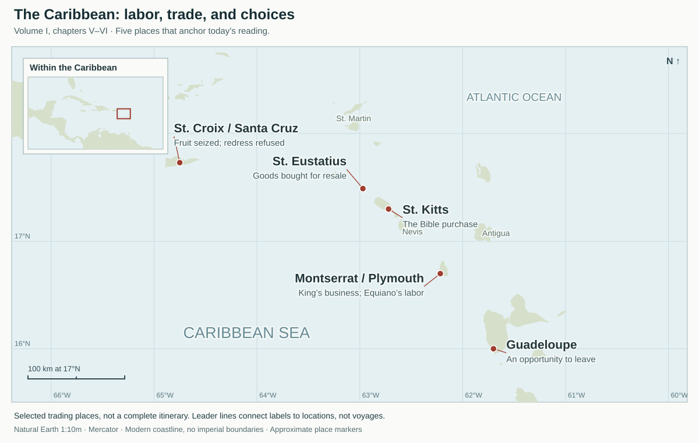
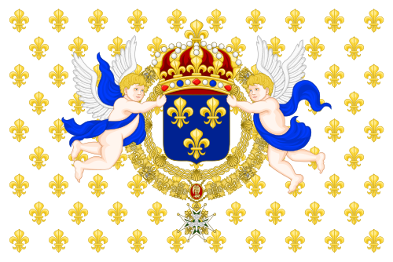

Equiano · Chapters 5–6
FRST 110 · Monday, November 2 · Volume I, Chapters V–VI
Sale in Montserrat, work and trade in the Caribbean, and the pursuit of freedom. Reputation, religious belief, and personal relationships shape Equiano’s choices while others retain the power to sell him.
How Equiano builds his argument
Individual episodes become claims about slavery, human conduct, and the possibility of freedom. Select a claim to see its evidence.
- A system changes people.
- Morality and advantage can agree.
- Britain supplies an ideal.
- Rights and effort remain insecure.
- Character gives conduct direction.
Faith and character sustain action when the outcome cannot be secured.
“I used every honest means, and endeavoured all that was possible on my part to obtain it”
Equiano calls himself a “predestinarian,” prays for liberty, and continues to work toward it. He pairs “honesty is the best policy” with the Golden Rule. Faith gives his efforts a moral direction; integrity governs the means he is prepared to use.
The narrative also gives goodness practical consequences: his fidelity increases the captain’s trust, and the captain’s testimony protects him from an accusation. Yet the threat of sale remains. Character and faith guide him through insecurity; they do not make the world reliably just. Chapter VI.
God above
Justice beyond the power of an owner or official
“no redress below”
The ownerTakes the catchThe officerThreatens the tradersThe lawFails to protect
“I must look up to God Mighty in the top for right.”
The fisherman’s appeal in chapter V gives injustice a vertical image. An earthly superior can be the person doing the wrong. Equiano tells him to look above because there is “no redress below.”
Chapter VI returns to the same image after both men’s fruit is seized. The fisherman looks to God; Equiano responds by giving him nearly a third of his recovered fruit. Trust is followed by generosity, continued trading, and renewed hope.
The Bible is part of the reasoning. Equiano explicitly recalls Moses responding to the wrong done to a fellow Hebrew by an Egyptian. Later he invokes the Golden Rule as a principle for his own conduct. Biblical language connects oppression, justice, and responsibility. V: the fisherman and Moses · VI: the fruit, Providence, and the Golden Rule.
Faith + character → generosity, honest effort, and the pursuit of liberty
Kindness can benefit others and serve one’s own interests. Equiano makes that case to slaveholders and also shows it in his conduct toward another enslaved man.
Maps: movement without secure freedom
Atlantic overview

Chapter V begins with the departure from England and sale in Montserrat. Philadelphia enters chapter VI as a hoped-for destination and a possible opportunity to escape. Savannah is the setting of the assault and the reported failure of legal redress. These are selected places in the narrative, not a continuous itinerary.
Caribbean trading places

Montserrat: King’s business and Equiano’s labor. St. Eustatius: buying goods for resale. St. Croix / Santa Cruz: fruit seized and redress refused. St. Kitts: the Bible purchase. Guadeloupe: an opportunity to leave with French shipping.
North-up Mercator maps; Natural Earth 1:10m coastline geometry, public domain. Modern outlines orient the reader; they do not depict eighteenth-century imperial borders. Markers are approximate town/island locations, not exact landing sites. The Atlantic arrow is a schematic England–Montserrat connection, not a reconstructed sailing route. Select a map to enlarge it.
Two empires meet in the West Indies
Equiano trades in waters where the British and French empires sit side by side. Montserrat and St. Kitts are British. Guadeloupe and Martinique are French: Britain had taken them in war and handed them back in the Treaty of Paris of 1763, the year Equiano reached Montserrat. Two of his other stops belong to smaller empires: St. Eustatius is Dutch and St. Croix is Danish.
Kingdom of Great Britain
The Union flag of 1707–1800, before Ireland’s cross was added.
Islands: Montserrat, St. Kitts, Barbados.
The law Equiano quotes: in Chapter V he cites “the 329th Act” of the Assembly of Barbados, a British colony. Under it, if an enslaved person dies or loses a limb while his master punishes him, “no person whatsoever shall be liable to a fine.” A man who kills his own slave “out of wantonness” pays “fifteen pounds sterling.” Equiano adds that “it is the same in most, if not all, of the West India islands.”
In the narrative: King’s business, the fisherman, the Bible bought at St. Kitts, and the sale threatened in Montserrat.

Kingdom of France
The royal flag used before the Revolution: the blue shield of the French kings on white, scattered with fleurs-de-lis.
Islands: Guadeloupe, Martinique.
Code noir, 1685: a decree of King Louis XIV that set the conditions of slavery in the French Antilles and served as the slave code of the French colonies until 1789. It restricted free people of color, required every enslaved person to be converted to Catholicism, set the punishments for enslaved people, and expelled all Jews from France’s colonies. Source.
In the narrative: at Guadeloupe a French fleet bound for Old France offers him passage, and he stays (Chapter VI). In Chapter V he goes straight from the Barbados act to Tobin’s account of a French planter on Martinique who works his own children in the fields “like beasts of burden.” Both empires appear in the same argument.
Chapter 5 · Sale, labor, and the language of benevolence
After the forced departure from England, Equiano is sold to Robert King in Montserrat. King employs him in boats, stores, and the movement of goods. Equiano describes King’s comparatively humane treatment alongside exhausting work and the insecurity of being owned.
The chapter moves beyond his own experience to accounts of colonial violence, confiscated property, and law. Equiano argues that slavery damages moral conduct and that humane treatment serves the planters’ own interests. Read Chapter V.
Chapter 6 · Trade, trust, and the pursuit of liberty
Small purchases and resales allow Equiano to accumulate money. Maritime skill and the captain’s support create opportunities, but neither earnings nor favorable recommendations guarantee security. The seizure of his goods, Joseph Clipson’s kidnapping despite evidence of free birth, and the assault in Savannah expose the limits of protection.
Equiano describes prayer, moral commitments, careful decisions, and practical efforts to obtain freedom. His relationships matter, but the chapter repeatedly distinguishes being treated better from being free. Read Chapter VI.
Character, belief, and freedom
1. Character: moral identity and someone else’s recommendation
“the character they had given me; a character which I afterwards found of infinite service to me” — Chapter V
Character has two linked meanings: conduct and reputation. A favorable recommendation affects how Equiano is treated and valued. In chapter VI, the captain’s testimony helps counter the accusation that he intends to run away. His protection still depends on someone with power choosing to vouch for him.
2. Predestination does not stop his efforts
“as I was from early years a predestinarian, I thought whatever fate had determined must ever come to pass” — Chapter VI
“I used every honest means, and endeavoured all that was possible on my part to obtain it” — Chapter VI
Equiano describes belief in a fixed outcome alongside anxious prayer and determined action. The two statements occur in the same passage: he believes his freedom is determined, yet works to obtain it.
3. Finding the better available path
He learns skills, trades, saves, cultivates trust, and weighs opportunities to leave. At Guadeloupe he describes an opportunity to escape, recalls kindness and “honesty is the best policy,” and stays. Later, King threatens another sale. A comparatively humane relationship can matter greatly while leaving the power of enslavement intact.
4. Britain’s liberty, colonial slavery, and “true interest”
“benevolence was their true interest” — Chapter V
“The freedom which diffuses health and prosperity through out Britain” — Chapter V
Equiano appeals both to moral obligations and to advantage: humane treatment is right and, he argues, beneficial to planters. The praise of British freedom appears alongside reported violence, property seizures, racial exclusion from redress, and the threat of sale.
His appeal to British liberty can be read as a demand that readers apply their stated ideals to people excluded from them. Admiration for freedom in Britain coexists with his account of coercion in British colonial society.
Eight words
| character | A person’s moral qualities; here also a reputation or recommendation |
|---|
| Providence | God’s care and guidance of events |
|---|
| predestinarian | Someone who believes that outcomes have been determined beforehand |
|---|
| liberty | Freedom from enslavement or coercive control |
|---|
| interest | Advantage or benefit; in other passages, influence through a connection |
|---|
| benevolence | Kindness and concern for others’ welfare |
|---|
| redress | A remedy or correction for an injustice |
|---|
| integrity | Honesty and consistency with moral commitments |
|---|
Optional eight-word self-test
Providence and predestination: Providence concerns divine care and governance; predestination concerns what has been determined beforehand. Equiano himself uses “predestinarian” here. His account does not present that belief as an instruction to stop acting.
Sources and scope
Equiano, Chapter V · Chapter VI. Use chapter and quoted wording; classroom page numbers vary.
St Andrews Encyclopaedia of Theology: Providence · Routledge: Predestination.
Map sources and location checks
Natural Earth geometry; WGS84 longitude/latitude projected to Mercator. CaribeWave coordinate table checks Plymouth, St. Eustatius, St. Kitts and Guadeloupe. Philadelphia, Savannah, Portsmouth. St. Croix marker is an approximate island location, checked against Natural Earth geometry. Source review: November 2, 2026.
Flags: Flag of Great Britain (1707–1800), public domain; Royal Standard of the King of France, Wikimedia Commons, CC BY-SA 3.0.